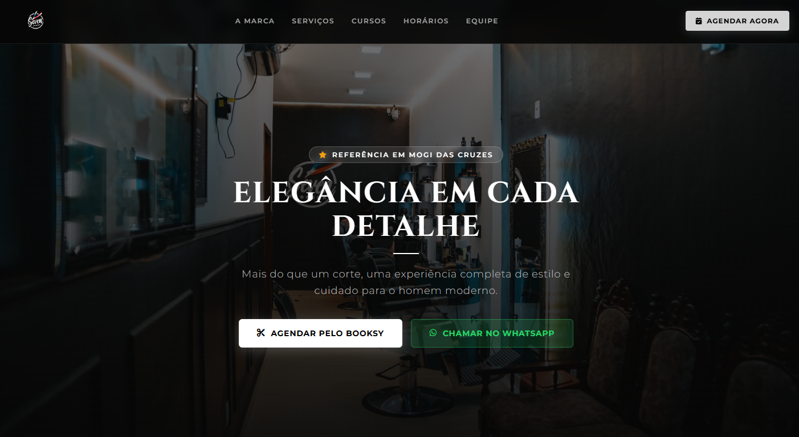
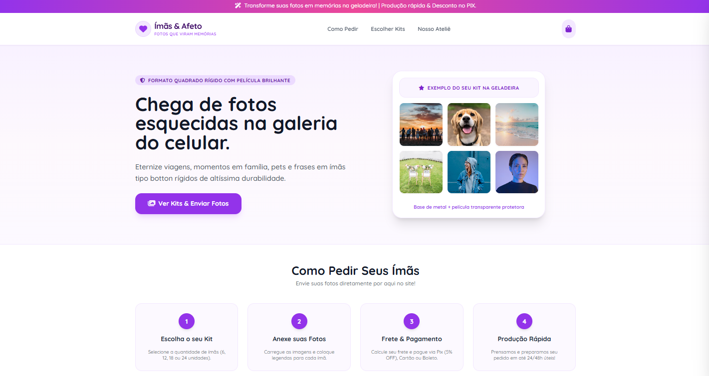
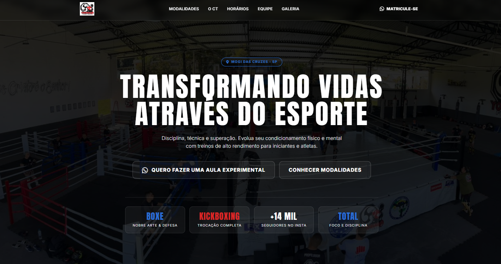

Seven Barbearia
Site institucional em funcionamento para barbearia em Mogi das Cruzes, com apresentação de serviços premium, página de cursos profissionalizantes, grade de horários e integração direta com Booksy e WhatsApp.
Olá, sou a Gabrielly. Desenvolvo interfaces web funcionais, limpas e totalmente responsivas, focadas em otimizar processos e atrair clientes para pequenas empresas e autônomos.
Não crio apenas páginas bonitas. Desenvolvo ferramentas que automatizam pedidos, organizam agendamentos e conectam você direto ao cliente.
Compromisso total com a entrega técnica e a clareza em todas as etapas. Você acompanha de perto a evolução do código do seu site.
Seu cliente acessa e compra pelo celular. Por isso, garanto layouts leves, rápidos e perfeitamente adaptados para qualquer tamanho de tela.

Site institucional em funcionamento para barbearia em Mogi das Cruzes, com apresentação de serviços premium, página de cursos profissionalizantes, grade de horários e integração direta com Booksy e WhatsApp.

Modelo funcional de loja virtual criado para demonstrar como agilizar vendas online e atendimentos: conta com upload de fotos pelo cliente, pré-visualização em tempo real, cálculo de frete por CEP e envio do pedido pronto para o WhatsApp.

Modelo demonstrativo desenvolvido para mostrar como academias e centros de treinamento podem apresentar o funcionamento das aulas, horários, modalidades e facilitar o agendamento de treinos experimentais.
Precisa automatizar suas vendas ou criar sua presença online? Vamos projetar juntos.
Estou pronta para entender os desafios do seu negócio e construir uma ferramenta sob medida para te ajudar a vender mais e atender melhor.